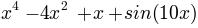

First of all, lets load Aqua in our script or in a ipython session:
In [1]: from aqua import *
Some basic notions on python will be assumed along this tutorial.
Todo
Make a short tutorial on python, enough to run aqua.
How to create, load and handle a network.
Lets create as simple example a network of cities:
In [2]: cities=network()
# Network:
# 0 nodes
# 0 links out
# 0 total weight nodes
Nodes can be added in two ways, along or inferred by the links addition:
In [3]: cities.add_node('Zaragoza')
In [4]: cities.add_link('Rome','Brescia',444)
In [5]: cities.add_link('Rome','Zaragoza',1112)
In [6]: cities.add_link('Zaragoza','Kiev',2561)
In [7]: cities.info()
# Network:
# 4 nodes
# 3 links out
# 0 total weight nodes
The nodes are attached to the network in order of creation:
In [7]: cities.node[0].label
Out[7]: 'Zaragoza'
In [8]: cities.node[3].label
Out[8]: 'Kiev'
Links are stored as a dictionary for each node (see ref). Nodes are from now on referred because of their indexes.
In [9]: cities.labels['Rome']
Out[9]: 1
In [10]: cities.node[1].link.keys()
Out[10]: [0, 2]
In [11]: print 'From Rome to Zaragoza: ', cities.node[1].link[0], 'km.'
From Rome to Zaragoza: 1112 km.
See also
include here a link to the class definition and attributes.
A network can be loaded together with their labels. Aqua uses its own compact format for the network, while the labels can be readed with many formats. This way a network can be initialized with the files or a posteriori:
Loading a simple network from a columns file such as net_ex1.inp, net_ex2.inp or net_ex3.inp can be done as follows:
In [2]: net1=network('net_ex1.inp')
# Network:
# 5 nodes
# 7 links out
# 0 total weight nodes
In [4]: net2=network(verbose=False)
In [5]: net2.read_net('net_ex2.inp')
# Network:
# 5 nodes
# 5 links out
# 6.0 total weight nodes
And using an extra file for the labels, labels_ex3.inp, we can also:
In [6]: net3=network('net_ex3.inp','labels_ex3.inp')
# Network:
# 4 nodes
# 5 links out
# 24.0 total weight nodes
In [7]: net3.labels()
Out[7]: {'Alexandra': 1, 'Bob': 2, 'Liliana': 0, 'Tom': 3}
Note
Describe the parameters needed in the text input files, and make a call to the subroutines of this part (like read_labels()).
The native format reduces the size of the file writting the topology of the network in a compact way. The labels must be loaded from a secondary file.
In [3]: net=network(file_net='net.pyn',net_format='native')
# Network:
# 979 nodes
# 22572 links out
# 9998950 total weight nodes
In [4]: net.read_labels('labels.pyn',format='text')
or
In [2]: net=network(file_net='net.pyn',file_labels='labels.pyn',net_format='native',labels_format='text')
# Network:
# 979 nodes
# 22572 links out
# 9998950 total weight nodes
There are three formats of output: ‘native’, ‘labels’, ‘text’.
The ‘native format’ is a compact format not readable for other programs. This format is recommended to work with aqua since the size of the file is smaller than the file created with ‘text’.
In [10]: net.write_net(name_file='net.pyn',format='native')
In [10]: net.write_net(name_file='net.net',format='text')
The labels can also be written in an independent file.
In [10]: net.write_labels(name_file='labels.pyn',format='text')
Two networks can be merged into one. The function updates one of the networks appending the new nodes and links and adding up the value of the weights of overlapping nodes and links.
In [8]: net_12=network()
# Network:
# 0 nodes
# 0 links out
# 0 total weight nodes
In [9]: net_12.merge_net(net1,verbose=False)
In [10]: net_12.merge_net(net2,verbose=False)
In [11]: net_12.info()
# Network:
# 6 nodes
# 11 links out
# 6.0 total weight nodes
This section is a tutorial on how to analyze kinetic networks. To illustrate the analysis some test networks are available.
A kinetic network has been obtained for particle in a 1D potential:
The files for this network are available as 2w_1D.net and 2w_1D.aux. Where the topology file is in the native format and the labels in text format.
In [2]: net_1D=network('2w_1D.net','2w_1D.aux',net_format='native')
# Network:
# 970 nodes
# 195638 links out
# 1000090000 total weight nodes
Since the label of each node corresponds to the bin of coordinate x, a single value on the midle of the bin can be given to each node as coordinate for representations.
In [3]: for nn in net_1D.node:
....: aa=nn.label[1:-1].split(',')
....: nn.coors=(float(aa[0])+float(aa[1]))/2.0
....:
In [4]: print net_1D.node[0].label, net_1D.node[0].coors
[-1.530,-1.525] -1.5275
This way we can plot the stationary probability distribution of the particle along x:
In [5]: xx=[]; yy=[]; delta_x=0.025
In [6]: for nn in net_1D.node:
....: xx.append(nn.coors); yy.append(nn.weight/(net_1D.weight*delta_x))
....:
In [7]: pyl.plot(xx,yy,'bo')
Out[7]: [<matplotlib.lines.Line2D object at 0x515a110>]
In [8]: pylab.show()
Detailed balance can be impossed in a kinetic network in the following way: if pji and pi are the original transition and stationary probabilities, the symmetric network has PiPji=(pjpij+pipji)/2.0 and Pi=sum(Pji). The following rule is applied for all nodes and links. Note that the factor 1/2.0 is not applied. In this way the symmetric network as a twofold total weight.
The function creates a new network but there is an option not to do it.
In [10]: net.info()
# Network:
# 979 nodes
# 22572 links out
# 9998950.0 total weight nodes
In [11]: net_s=net.symmetrize()
# Network:
# 979 nodes
# 26887 links out
# 19997900.0 total weight nodes
How to build a cFEP from a kinetic network.
The Markov Clustering Algorithm is applied to the network with two different criteriums: convergence (eps) or number of iterations (iterations).
In [5]: net.mcl(granularity=1.2,eps=0.005,pruning=False,verbose=True)
# Number of clusters: 3
In [5]: net.mcl(granularity=1.2,iterations=5000,pruning=False,verbose=True)
# Number of clusters: 3
The pruning option executes an approximation to MCL which is faster. When this pruning option is activated the algorithm is run via an external program (mcl). In the future the pruning option will be included in the code of Aqua. In this case no additional parameters are needed.
In [5]: net.mcl(granularity=1.2,pruning=True,verbose=True)
# Number of clusters: 3
eeeee
How to analize the Conformational Space Network of bulk water. Add references.
The system is loaded from a pdb or gro file.
In [2]: watbox=molecule('tip4p-2005.pdb')
# System created from the file tip4p-2005.pdb :
# 4096 atoms
# 1024 residues
# 1 chains
# 1024 waters
# 0 ions
# 1 frames/models
We can already calculate the microstates for the coordinates stored from the pdb:
In [3]: mss_water(watbox,definition='Skinner')
# Water microstates updated
In [4]: watbox.water[500].microstate
Out[4]: '1 | 2 3 4 5 | 6 7 8 | 9 10 11 | 12 13 14 | 15 0 17'
The former function can return the microstates of the system as an array or the indexes of the water molecules behind it.
In [5]: mss_frame=mss_water(watbox,definition='Skinner',output_array='microstates',verbose=False)
In [6]: ind_frame=mss_water(watbox,definition='Skinner',output_array='indexes_waters',verbose=False)
In [7]: print mss_frame[500]; print ind_frame[500]
[ 1 2 3 4 5 6 7 8 9 10 11 12 13 14 15 0 17]
[500 323 670 973 151 566 10 722 942 71 306 777 212 97 865 -1 573]
Notice that a ‘0’ in any position of the microstate corresponds to a ‘-1’ in the array of water indexes. This is due to the fact that zero is the first index of water.
The system is loaded as it was described in the previous section but only the topology will be used, not the coordinates of the initial frame. This way these data can be removed:
In [2]: watbox=molecule('tip4p-2005.pdb',verbose=False)
In [3]: watbox.delete_coors()
We can now build the kinetic network reading the frames of a trajectory:
In [6]: watnet=kinetic_network(watbox,'md_test.xtc',begin=0,end=100,definition='Skinner')
# Network:
# 2597 nodes
# 11277 links out
# 102400.0 total weight nodes
A kinetic network ‘watnet’ has been created analysing the first 100 frames of the trajectory.
The trajectory to convert into a Kinetic Network can have the following format: - [ Num. Particles, time step, dimension] - [time step, dimension] - [time step]
To illustrate this section lets take 4 independent particles, or 1 particle with 4 independent realizations, with a 10 steps dynamics each, characterized by a 3D array of integers.
In [56]: print traj
[[[1, 3, 6], [1, 4, 6], [1, 5, 6], [1, 5, 7], [1, 5, 8], [1, 5, 9], [2, 5, 0], [2, 4, 0], [2, 4, 1], [2, 3, 0]],\
[[1, 3, 3], [1, 4, 4], [1, 5, 5], [1, 5, 6], [1, 5, 7], [2, 5, 7], [2, 4, 7], [2, 4, 6], [2, 4, 5], [2, 4, 4]],\
[[2, 3, 4], [1, 3, 4], [1, 3, 5], [1, 3, 6], [1, 3, 7], [2, 3, 7], [2, 3, 7], [2, 3, 6], [2, 3, 5], [2, 3, 4]],\
[[1, 3, 4], [1, 2, 4], [1, 1, 4], [2, 1, 4], [2, 1, 1], [2, 4, 1], [2, 5, 1], [2, 5, 9], [1, 5, 9], [2, 4, 4]]]
This way, the coordinates of the 3rd particle at time=4 are:
In [63]: print traj[2][4][:]
[1, 3, 7]
To map it into a kinetic network:
In [3]: net=kinetic_network(traj,ranges=[[1,2],[0,10],[0,10]])
# Network:
# 31 nodes
# 35 links out
# 36.0 total weight nodes